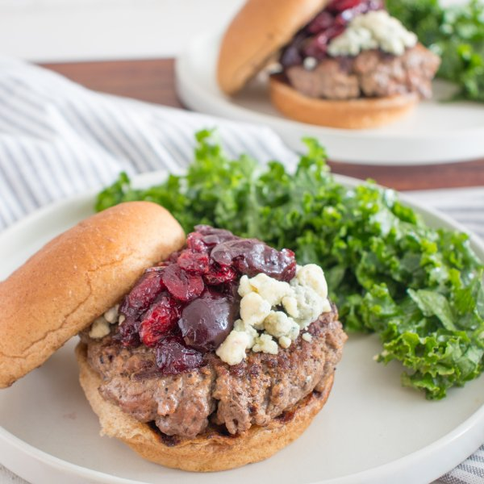

Blue Cheese Burger with Cherry-Cranberry Sauce & Lemony Kale

Nutrition (per serving)
703.9 kcalCalories
45.5 gProtein
40.1 gCarbs
40.5 gFat
Full nutrition table
| Calories | 703.9 kcal |
| Total fat | 40.5 g |
| Saturated fat | 16.1 g |
| Trans fat | 2 g |
| Cholesterol | 136.9 mg |
| Sodium | 336.5 mg |
| Carbohydrates | 40.1 g |
| Fiber | 5.5 g |
| Sugars | 18.1 g |
| Protein | 45.5 g |
| Potassium | 966.1 mg |
| Calcium | 293.3 mg |
| Iron | 6 mg |
| Vitamin A | 791 IU |
| Vitamin C | 54.4 mg |
| Vitamin D | 11 IU |
Cookware
Ingredients
- 1 (4 oz) pkgcrumbled blue cheese
- ¼ cupdried cranberries
- 1 ½ cupsfrozen cherries
- 2 clovesgarlic
- 1 bunchkale
- 1 ½ lblean ground beef
- 1lemon
- 4whole grain buns or rolls
- black pepper
- brown sugar
- Dijon mustard
- extra virgin olive oil
- garlic powder
- honey
- red wine vinegar
- rosemary, dried
- salt
Steps
- Place cherries, cranberries, vinegar, sugar, and spices in a medium saucepan. Bring to a boil over medium-high heat.1 ½ cup frozen cherries
¼ cup dried cranberries
4 tsp red wine vinegar
1 tsp brown sugar
½ tsp rosemary, dried
½ tsp salt
¼ tsp black pepper - Once boiling, gently crush the fruit with the back of a spoon to release juices. Reduce heat to a simmer and continue cooking, stirring occasionally, until thickened, about 15 minutes. Remove from heat.
- Meanwhile, peel and mince garlic; transfer to a large bowl.2 cloves garlic
- Wash, dry, and juice lemon into the bowl with the garlic. Add oil, Dijon, honey, salt, and pepper; whisk to combine the dressing.1 lemon
4 tsp extra virgin olive oil
2 tsp Dijon mustard
1 tsp honey
½ tsp salt
¼ tsp black pepper - Wash, dry, and fold kale leaves in half lengthwise and slice off the stems. Chop or tear leaves into bite-sized pieces and transfer to the bowl. Use your hands to massage the dressing into the kale until slightly softened; set aside.1 bunch kale
- Form the ground beef into 4 equal-sized patties, place on a plate, and season with spices.1 ½ lb lean ground beef
1 tsp salt
½ tsp black pepper
½ tsp garlic powder - Preheat a large grill pan, outdoor grill, or regular skillet over medium-high heat.
- Once the grill pan is hot, place patties in the pan and cook, undisturbed, for 5 minutes; flip patties and cook an additional 2-3 minutes, until cooked through. Once done, transfer to a clean plate.
- If desired, place buns, cut-side down, on the grill pan to toast, 1-2 minutes.4 whole grain buns or rolls
- Place bottom half of a bun on each plate, then top with burgers, blue cheese, and cherry sauce. Close with the top half of the bun and serve with salad on the side. Enjoy!1 (4 oz) pkg crumbled blue cheese